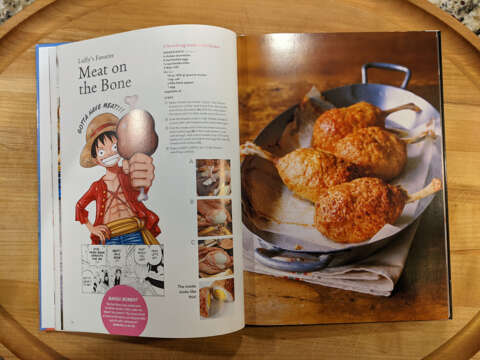

Sanji’s Chicken Stock

ingredints
- 2 wings of chicken bones/carcass
- 1200mL water
- 3000mL water
- 150g vegetable bits (e.g. green parts of a leek, carrot skin, ginger peel)
How to make
- Rinse chicken with water and divide into 3 even pieces.
- Put into boiling water, when the surface becomes white, remove from water. Clean off any blood, etc
- Add water, chicken, and vegetables in a pot and heat on medium. When it reaches a boil, scoop froth from the top (3). Simmer 40-60 minutes on low (4). Taste. If the taste is like broth, it is done. Strain out vegetables bits and chicken (5).
return